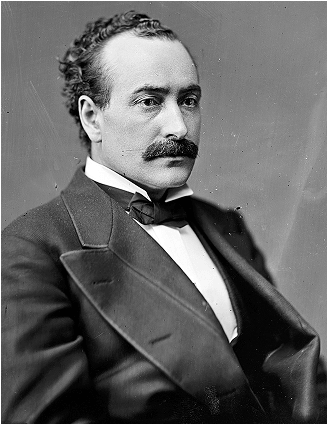
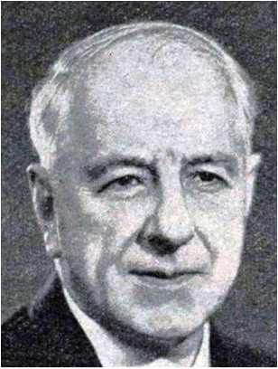
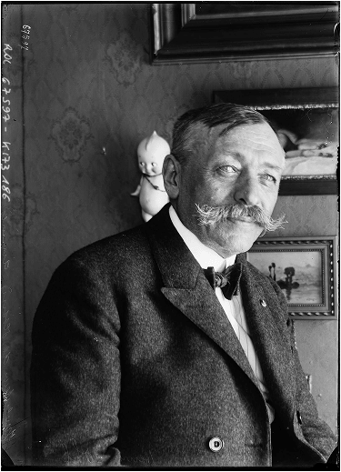
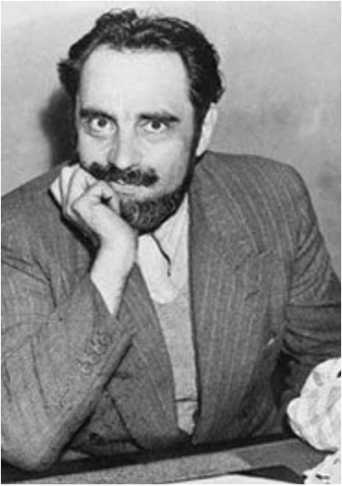
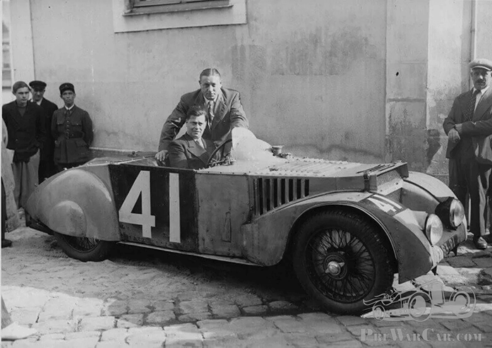
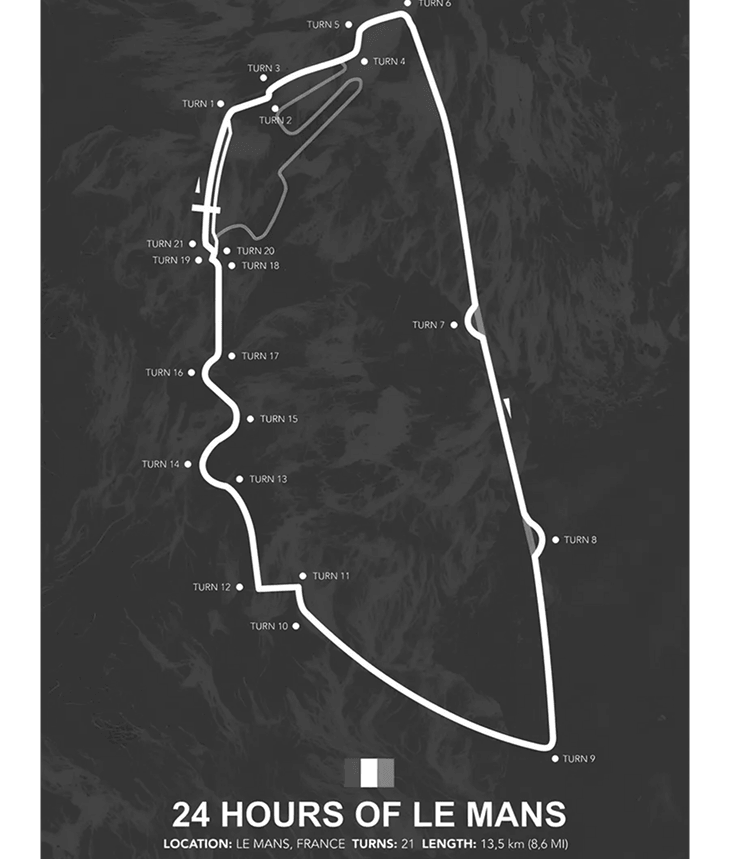
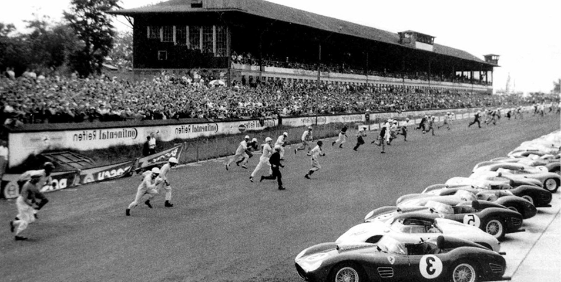
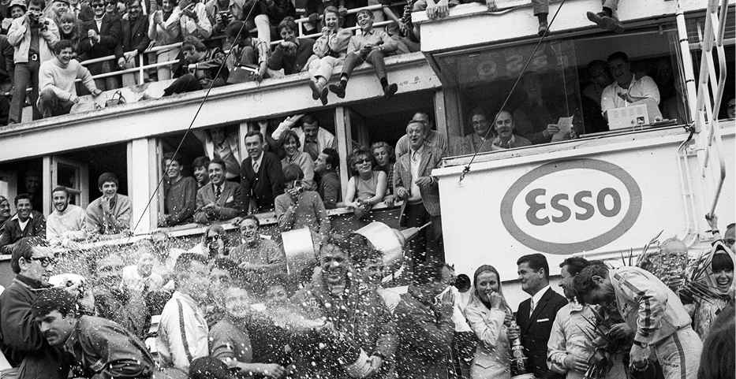
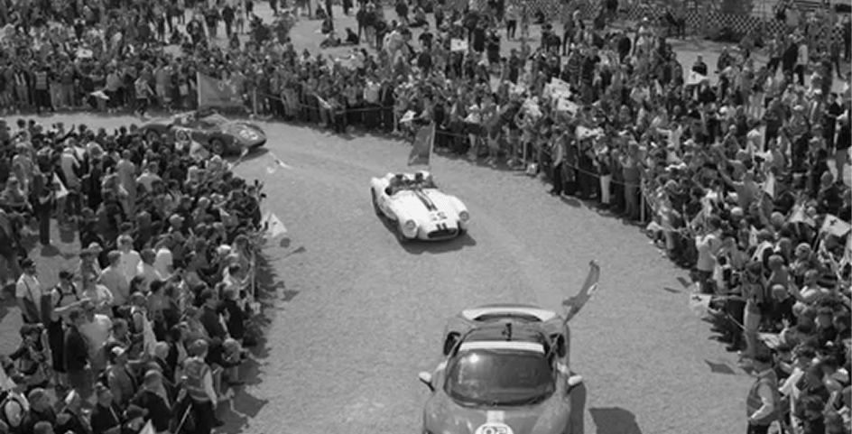
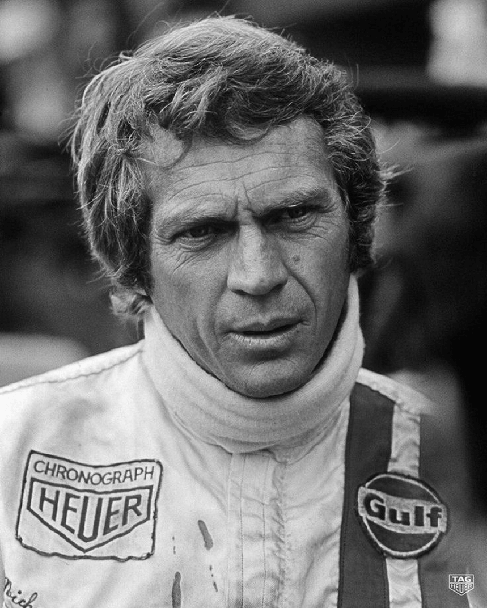

Испытание, а не гонка
В начале 1920-х годов в Европе доминировали классические Гран-при — чистая скорость, короткие дистанции, специализированные гоночные болиды. Но группу энтузиастов из Западного автомобильного клуба Франции (Automobile Club de l'Ouest, ACO) это не устраивало
Они задумали нечто иное: соревнование, которое проверит не то, кто быстрее на короткой дистанции, а то, чей автомобиль лучше. Надёжность. Экономичность. Освещение в ночное время. Управляемость. Именно эти качества нужны обычному автомобилю, который покупают люди
Четверо основателей


Легенда родилась на Парижском автосалоне в 1922 году, когда четыре человека объединили усилия
Именно Кокий предложил не 8-часовую гонку, как планировалось изначально, а 24-часовой марафон — испытание, которое отделит действительно надёжные автомобили от тех, кому есть что скрывать


«C’est impossible!» Это невозможно
— инженеры 1923 года
Какая машина выдержит целые сутки непрерывной гонки? По каким дорогам?
- Трасса: 17 км грунтовых и гравийных дорог с ямами
- Погода в день старта: ужасная — дождь, ветер, град
33 автомобиля готовились выехать на этот ад. Зрители, несмотря на погоду, заполнили трибуны. Никто ещё не знал, выдержит ли хоть одна машина 24 часа.
Первый старт и рождение чемпионов
Организаторы придумали хитрую систему: гонка должна была стать трёхгодичным чемпионатом. Победителя объявляли бы только через три года, суммируя результаты. К счастью, эту идею быстро забросили.
После 24 часов ада на колёсах первыми финишную черту пересекли французы Андре Легаш и Рене Леонар на автомобиле Chenard & Walcker.
Их результаты:
- Трасса: 17 км грунтовых и гравийных дорог с ямами
- Погода в день старта: ужасная — дождь, ветер, град
Организаторы придумали хитрую систему: гонка должна была стать трёхгодичным чемпионатом. Победителя объявляли бы только через три года, суммируя результаты. К счастью, эту идею быстро забросили.

Эпохи
противостояний
Трасса
длина круга — 13 626 метров.
Это одна из самых длинных трасс в мировом автоспорте.
В отличие от специально построенных автодромов в Монце или Нюрбургринге, трассу в Ле-Мане «нашли» на обычных французских дорогах. Это полуперманентная трасса — 9 из 13,6 километров — обычные дороги общего пользования, которые перекрывают на время гонки. Остальное — постоянный автодром..

Прямая, на которой рождались рекорды Знаменитая прямая Мюльсан — почти 6 километров без единого поворота.
Здесь машины разгонялись до скоростей, которые сегодня кажутся фантастикой:
- 1971: Porsche 917 — 362 км/ч
- 1978: Porsche 935 — 367 км/ч
- 1988: WM Peugeot — 407 км/ч
Традиции, которые стали легендами
Le Mans start: безумный старт
До 1969 года гонка начиналась с того, что водители стояли на одной стороне трассы, а машины — на другой. По взмаху французского флага пилоты бежали через дорогу, запрыгивали в автомобили и уносились прочь.


Шампанское на подиуме: спасибо Дэну Герни
1967 год. Американец Дэн Герни выигрывает гонку на Ford GT40. На подиуме он получает бутылку шампанского. Внизу — главный босс Ford Генри Форд II, Кэрролл Шелби и журналисты, которые предрекали ему провал. Герни встряхивает бутылку и поливает всех вокруг. Эту фотографию облетел весь мир. И с тех пор так делает каждый победитель в каждой гонке на планете.
Парад пилотов
В пятницу перед гонкой все 60+ экипажей проезжают по центру города Ле-Ман на старинных автомобилях. 250 000 зрителей выстраиваются вдоль улиц, чтобы увидеть пилотов в неформальной обстановке.

"
24 часа Ле-Ман — это не только рекорды, трагедии и технологии. Это ещё и 250 000 человек, которые каждую третью субботу июня собираются у трассы. Они ставят палатки, жарят сосиски, спорят о тактике до хрипоты — и в четыре часа дня замирают, когда над трассой проносится французский триколор.

За 100 лет гонка пережила войны, экономические кризисы и смертельные аварии. Но традиции остались. Парад пилотов в центре Ле-Мана. Знаменитости, взмахивающие флагом. И тот самый момент, когда 62 машины срываются с места под рев моторов.
И это чувство — когда ты стоишь на трибуне в три часа ночи, смотришь на фары, летящие по прямой Мюльсан, и понимаешь: жизнь — это гонка. Всё остальное — просто ожидание.